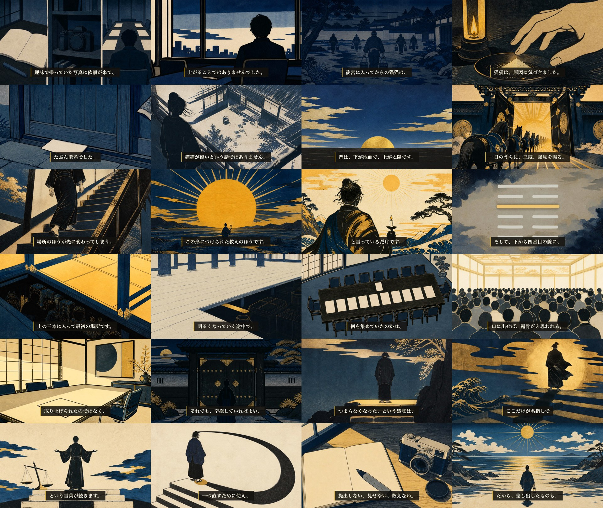

プレビュー（854×480・17MB）。本編は releases/071/ep51.mp4（1920×1080・762MB・10分17秒）。
| 台本 | 独立採点 93点・preflight PASS・本人承認済み（8/13） |
|---|---|
| 発音 | FAIL 0 ／ 読み辞書で「易経→いききょう」の誤読を修正済み（whisper ASR照合） |
| 字幕同期 | timing preflight PASS（32シーン・whisper単語アライメント） |
| 黒落ち | 31箇所すべての境界を実映像から抽出して検査・0件（ep1-38で全話やらかしたクラス） |
| 識別監査 | 全32カットで作品・キャラとも「不明」＝PASS。顔／トレース／文字／写実の安全弁も全カットfalse |
| 六爻図 | 晋=000101（下三本が陰・四爻が金の陽）をdbと逐語照合済み。AI線画が矛盾していたため決定論図へ差し替え |
| 音量 | mean -20.8dB / peak -4.4dB |
| シーン画像 | 88点（合格90に未達）— 下の決裁事項 |

左上（夜明け前の薄明）から右下（高く昇った日と短い影）へ、光の高さが台本の進行と一致する設計。幕3で日が昇り、幕3後半に「光が届かない一角」を作り、幕4でそこに光が入ります。
このまま公開キット（サムネ・概要欄）へ進んでよいか。直すべき場所があれば秒数かカットIDで指定してください。
A（推奨）: 88点で通す — 致命傷はゼロ（顔・IP意匠・文字は満点、写実ドリフトも解消済み）。4周で 82→86→87→88→88 と踊り場に入り、毎周ちがうカットの様式の詰めを指摘される状態です。
B: もう1周直す — 幕1-2に残る金（行灯・月・金雲）と平塗りの階調を直して90を狙う。画像→モーション→再レンダで約1時間、上がる保証はありません。
この回で潰した実害：擬似文字の混入3カット（紙面を無地化）／写実ドリフト1カット（光芒＋グラデーション→平塗り2面）／H66「金＝報酬色」の先食い（幕1-2を藍と墨へ）／V_03_10が前カットと同アングルの続きになっていなかった／V_05_08が冒頭の道具（カメラ・蛍光ペン）を回収していなかった／三分割と真俯瞰のカットをDepthFlow対象から除外（視差で枠が波打つため）。
音声はIrodori-TTS V4での最初の本編（話速1.15倍＝決裁B適用。素の話速はmoriokiの0.66倍で11:29になるため）。